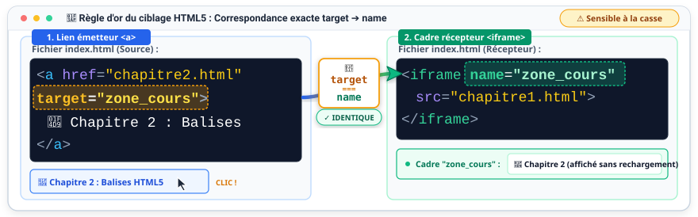
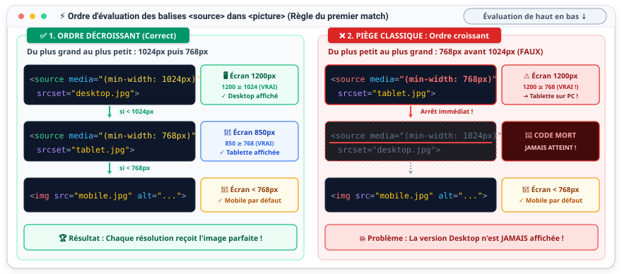

Cette troisième séance d'informatique en 3ème SI approfondit la maîtrise des
langages HTML5 et CSS3 à travers des concepts avancés de structuration et de
mise en page.
Elle permet de consolider l'autonomie des élèves dans l'intégration modulaire, la manipulation du flux de
document, le contrôle précis des dimensions et l'application d'effets visuels modernes avant d'aborder la
programmation dynamique en JavaScript.
🎯 Objectifs d'apprentissage :
Intégrer et piloter des cadres modulaires avec la balise <iframe> et le ciblage via
l'attribut target.
Conditionner le chargement des ressources selon le dispositif d'affichage avec l'attribut
media.
Expliciter les sigles et acronymes avec la balise sémantique <abbr> et son attribut
title.
Masquer des éléments du flux d'affichage avec l'attribut booléen hidden.
Maîtriser les types d'affichage du modèle de boîte avec la propriété display
(block, inline, inline-block, none).
Mettre en œuvre le positionnement flottant avec float et rétablir le flux avec
clear.
Contrôler le débordement de contenu avec la propriété overflow (visible,
hidden, scroll, auto).
Ajuster la transparence avec opacity et concevoir des ombrages portés avec
box-shadow.
Transformer la casse du texte avec text-transform et cibler les balises avec le sélecteur
combiné element.classe.
Appliquer des filtres graphiques d'images en pur CSS avec filter (grayscale,
contrast, blur, brightness).
Créer des micro-animations fluides d'états au survol avec la propriété transition.
Structurer des tableaux de données avancés avec border-collapse et
table-layout: fixed.
Concevoir et styliser une plateforme interactive complète : « IA Décodée » (Mini-projet 20).
Aperçu du mini-projet à réaliser en fin de séance : Plateforme
« IA Décodée »
Auto-évaluation & Prérequis
Vérifiez la maîtrise de vos prérequis en HTML5 et CSS3 avant de débuter l'étude des notions avancées de cette
séance :
Question 1
Quelle est la différence fondamentale de comportement entre une balise de niveau bloc (ex.
<div>, <p>) et une balise de niveau en-ligne (ex.
<span>, <a>) ?
💡 Cliquez ici pour afficher la réponse
Élément bloc (display: block) : Occupe toute la largeur disponible de
son conteneur, débute systématiquement sur une nouvelle ligne et accepte la définition de dimensions
explicites (width, height, marges et espacements verticaux).
Élément en-ligne (display: inline) : Se glisse naturellement au sein du
flux textuel sur la même ligne, n'occupe que la largeur exacte de son contenu et ignore les propriétés
width et height.
Question 2
Quelle est la différence entre l'attribut booléen hidden en HTML5 et la déclaration CSS
display: none; ?
💡 Cliquez ici pour afficher la réponse
Sur le plan visuel, le résultat est équivalent : l'élément disparaît complètement de l'affichage et ne
réserve aucun espace.
Toutefois, hidden est un attribut sémantique natif HTML5 directement compris
par le navigateur et les lecteurs d'écran sans nécessiter de code CSS, tandis que
display: none; est une règle de style purement cosmétique définie dans une feuille de style.
Question 3
À quoi sert l'attribut target sur un lien hypertexte <a>, et comment peut-on
le relier à un <iframe> ?
💡 Cliquez ici pour afficher la réponse
L'attribut target précise le contexte de navigation récepteur où doit s'ouvrir le lien. En
attribuant à target la valeur du nom (attribut name) d'un
<iframe>, le clic sur ce lien charge immédiatement la page dans ce cadre sans recharger
la page principale.
Conteneurs & Attributs HTML5
Cadres intégrés : <iframe>
L'élément <iframe> (pour inline frame) permet
d'incorporer une autre page HTML, un document interactif ou une ressource externe directement à l'intérieur
de la page Web courante, formant ainsi une fenêtre de navigation autonome.
1. Syntaxe fondamentale
<iframe src="vision.html" name="mini_sandbox" width="800" height="400">
Votre navigateur ne supporte pas les iframes.
</iframe>
2. Attributs essentiels
src : spécifie l'adresse URL (absolue ou relative) du document à afficher
dans le cadre.
name : attribue un identifiant de contexte de navigation au cadre,
permettant à des hyperliens de le cibler.
3. Mécanisme de ciblage avec l'attribut target
Par défaut, un lien hypertexte s'ouvre dans la fenêtre courante (target="_self") ou dans un
nouvel onglet (target="_blank").
En affectant à l'attribut target d'un lien la valeur du
name d'un <iframe>, le clic sur ce lien charge immédiatement
le document à l'intérieur de ce cadre sans recharger la page principale.
Règle de correspondance : La valeur renseignée dans target="..." sur la balise
<a> doit correspondre exactement à la valeur de l'attribut
name="..." défini sur la balise <iframe> réceptrice.
Exemple : Manuel numérique avec sommaire interactif
Considérons un manuel de cours en ligne où une barre de navigation permet d'afficher les différents chapitres
dans une zone de lecture unique :
<!-- 1. Liens du sommaire ciblant le cadre "zone_cours" -->
<nav>
<a href="chapitre1.html" target="zone_cours">Chapitre 1 : Introduction au Web</a> |
<a href="chapitre2.html" target="zone_cours">Chapitre 2 : Balises HTML5</a> |
<a href="chapitre3.html" target="zone_cours">Chapitre 3 : Feuilles CSS3</a>
</nav>
<!-- 2. Cadre récepteur identifié par name="zone_cours" -->
<iframe src="chapitre1.html" name="zone_cours" width="100%" height="240">
Votre navigateur ne supporte pas les cadres intégrés.
</iframe>
Principe d'exécution : Lorsque l'utilisateur clique sur le lien « Chapitre 2 : Balises
HTML5 », le navigateur repère le cadre portant name="zone_cours" et y charge la page
chapitre2.html sans jamais quitter ni rafraîchir la page principale.
⚡ Démonstration interactive du mécanisme iframe & target :
Cliquez sur l'un des boutons de chapitres ci-dessous pour observer le
chargement ciblé dans le cadre récepteur (Mini-Projet 21) :
Cas d'usage pédagogique : Cette technique permet de concevoir des portails documentaires, des
visionneuses multimédias ou des hubs d'ateliers modulaires tout en conservant une structure de code claire et
découplée.
Exercice 1 : Cadres intégrés
L'objectif de cet exercice pratique est de concevoir un Manuel Numérique en combinant une barre de
navigation et un cadre intégré.
🎯Objectif & Travail demandé :
À partir du dossier de travail fourni contenant les chapitres du cours (fichiers HTML) et leur feuille de
styles CSS, vous devez réaliser la page d'accueil interactive index.html :
Télécharger l'archive ZIP et décompresser son contenu.
Créer le fichier index.html structurant le portail avec son en-tête
<header> et sa zone de contenu <main>.
Insérer des liens de navigation pointant vers les trois chapitres
chapitre1.html, chapitre2.html et chapitre3.html.
Intégrer le cadre <iframe> de manière à afficher le
contenu de chaque chapitre sans recharger la page. Le cadre affiche la page
chapitre1.html au chargement.
Ajoutez à chacun de ces trois liens l'attribut target afin
d'indiquer que la cible d'affichage est le cadre intégré récepteur.
Étape 4 — Intégration et paramétrage du cadre <iframe> :
Dans la section principale (<main>), insérez un cadre intégré avec les
attributs suivants :
name : nom du cadre identique à la valeur detarget utilisé dans les
liens.
src : affiche le premier chapitre dès le chargement initial de la page.
width et height : largeur et hauteur confortables pour la lecture (ex.
width="100%" et height="500").
Règle d'or du mécanisme de ciblage :
La valeur spécifiée dans l'attribut target de chaque lien doit correspondre
exactement (à la lettre près, en respectant les minuscules/majuscules) au nom défini dans
l'attribut name de l'élément <iframe>.

Illustration de la règle de correspondance exacte : l'attribut target du lien désigne précisément le name
du cadre récepteur.
Images adaptatives : <picture> et <source>
L'attribut media conditionne le chargement d'une ressource ou l'application
d'une feuille de style selon les caractéristiques du dispositif de consultation (largeur de la fenêtre
d'affichage, orientation ou résolution d'écran).
1. Images adaptatives avec <picture> et <source>
Associé à l'élément <picture> et à la balise
<source>, l'attribut media permet au navigateur de
sélectionner intelligemment l'image la plus appropriée :
Sur grand écran (ordinateur de bureau, tablette en mode paysage) : le navigateur
télécharge une version Haute Définition (HD) riche en détails.
Sur petit écran (smartphone, fenêtre réduite) : le navigateur bascule automatiquement sur
une version normale / standard plus légère, accélérant le chargement et économisant la bande
passante.
<!-- Chargement adaptatif selon la résolution de l'écran -->
<picture>
<!-- Image Haute Définition chargée uniquement si la largeur d'écran est >= 768px -->
<source media="(min-width: 768px)" srcset="images/nano-banana-hd.jpg">
<!-- Image normale / standard de repli pour les petits écrans et mobiles -->
<img src="images/nano-banana-normal.jpg" alt="Mascotte Nano Banana" class="img-fluid rounded border shadow-sm">
</picture>
🍌 Démonstration en direct de l'image adaptative (Nano Banana) :
Redimensionnez la largeur de votre fenêtre pour observer le basculement automatique entre la version
Haute Définition (≥ 768px) et la version Normale (< 768px) :
Chargement conditionnel avec l'attribut media : Nano Banana
HD (≥ 768px) / Normale (< 768px)
1. Version Haute Définition (HD)
Ciblée par media="(min-width: 768px)"
2. Version Normale / Standard
Définie sur la balise de repli <img>
2. Feuilles de style conditionnelles avec <link> ou <style>
L'attribut media peut également être employé sur les balises <link> ou
<style> (ex. media="screen") pour restreindre l'application d'une feuille de
style aux caractéristiques de l'écran.
Exercice 2 : Conception Responsive
Mettez en pratique vos compétences sur la balise <picture>, les éléments
<source> et l'attribut media en réalisant
une interface web adaptative capable de charger dynamiquement les images en fonction de la résolution et de
l'orientation de l'écran.
🎯 Objectifs pédagogiques :
Comprendre la syntaxe du conteneur <picture> et l'ordre d'évaluation
des balises <source>.
Conditionner les images selon la largeur d'écran (Media Queries :
min-width: 1024px et min-width: 768px).
Détecter l'orientation de l'appareil avec
media="(orientation: landscape)".
Assurer la compatibilité descendante grâce à l'élément de repli obligatoire
<img>.
Par défaut et sur smartphone (< 768px) : afficher images/banner-mobile.jpg via la
balise <img>.
💡 Ordre d'évaluation des règles media :
Le navigateur évalue les balises <source> de haut en bas et retient la première
condition vérifiée. Il faut donc toujours ordonner les règles min-width de la plus
grande à la plus petite (ex. 1024px avant 768px).

Comparaison du mécanisme d'évaluation : le classement décroissant garantit que chaque écran reçoit sa
version optimale sans masquer les règles suivantes.
Étape 3 — Adaptation d'un poste de travail informatique (Thème STI) :
Dans la deuxième section, configurez le chargement adaptatif pour le thème technologique :
Grand écran (≥ 1024px) : images/tech-desktop.jpg
Écran moyen (≥ 768px) : images/tech-tablet.jpg
Mobile (< 768px) : images/tech-mobile.jpg (balise <img> de repli).
Étape 4 — Détection de l'orientation de l'écran :
Dans la troisième section, utilisez le critère d'orientation :
En mode paysage (largeur > hauteur) : condition media="(orientation: landscape)" pour
charger images/paysage.jpg.
En mode portrait (vertical) : balise de repli <img src="images/portrait.jpg" ...>.
Étape 5 — Test et validation dans le navigateur :
Ouvrez votre fichier index.html dans un navigateur. Redimensionnez horizontalement la fenêtre
et observez :
L'indicateur interactif en haut de page affiche en temps réel la largeur en pixels et le palier actif
(Desktop, Tablette ou Mobile).
L'image bascule automatiquement avec le badge correspondant incrusté dans le visuel.
Abréviations : <abbr>
En HTML5, la balise sémantique <abbr> (pour abbreviation) est
utilisée pour représenter une abréviation, un sigle ou un acronyme (ex. IA, HTML, CSS).
1. Rôle et utilisation de l'attribut title
Pour expliciter le sens d'un terme abrégé, on lui associe systématiquement l'attribut
title, qui contient la description ou le développement complet du sigle :
<p>
Le standard <abbr title="HyperText Markup Language">HTML5</abbr>
est maintenu par le <abbr title="World Wide Web Consortium">W3C</abbr>.
</p>
2. Atouts ergonomiques et accessibilité
Infobulle native (tooltip) : Le navigateur affiche automatiquement une infobulle
explicative lorsque l'internaute survole l'élément avec le pointeur de la souris.
Accessibilité (A11y) : Les lecteurs d'écran utilisés par
les personnes malvoyantes peuvent énoncer le développement complet du terme au lieu de simplement épeler les
lettres.
Rendu visuel par défaut : La plupart des navigateurs soulignent le texte délimité par
<abbr> d'une fine ligne pointillée discrète (dotted underline) pour inciter au
survol.
Code HTML de la démonstration :
<p>
Un modèle d'<abbr title="Intelligence Artificielle">IA</abbr> applique un algorithme de
<abbr title="Mécanisme d'ajustement automatique des poids du réseau neuronal">rétropropagation</abbr>
sur un processeur <abbr title="Graphics Processing Unit - Processeur graphique hautement parallélisé">GPU</abbr>
pour minimiser l'<abbr title="Écart mesuré entre la prédiction mathématique et la valeur réelle">erreur quadratique</abbr>.
</p>
💡 Rendu dans le navigateur (survolez les termes soulignés avec la souris) :
Un modèle d'IA applique un algorithme de rétropropagation
sur un processeur GPU pour minimiser
l'erreur quadratique.
Éléments invisibles
HTML5 fournit l'attribut booléen global hidden pour indiquer qu'un élément
n'est pas ou n'est plus pertinent pour l'affichage courant.
1. Comportement de l'attribut hidden
Lorsqu'un élément possède l'attribut hidden, le navigateur le retire totalement de l'affichage
visuel et libère immédiatement l'espace qu'il aurait dû occuper dans le flux de la page :
<!-- Paragraphe confidentiel masqué de l'affichage -->
<p hidden>Données de diagnostic interne réservées aux administrateurs.</p>
<!-- Bloc de calcul masqué à l'état initial -->
<div id="bloc-formule" hidden>
<h4>Formule mathématique</h4>
<p>y = 0.5 * x + 2.0</p>
</div>
2. Comparaison avec les règles de visibilité CSS
Technique
Nature
Effet sur l'affichage et l'espace réservé
hidden
Attribut natif HTML5
Élément totalement masqué. Ne réserve aucun espace.
display: none;
Propriété CSS
Retire l'élément du flux d'affichage visuel. Ne réserve aucun espace.
visibility: hidden;
Propriété CSS
Rend l'élément invisible, mais conserve l'espace blanc qu'il occupe dans la page.
3. Démonstration des trois méthodes de masquage
Pour observer concrètement la différence d'occupation spatiale entre ces trois techniques, considérons une
rangée composée de trois éléments consécutifs : Bloc 1, Bloc 2 (l'élément
soumis au masquage) et Bloc 3.
Les 3 blocs occupent normalement leur place dans le flux horizontal.
2. Attribut HTML5 hiddenhidden
Bloc 1
Bloc 2
Bloc 3
Bloc 2 est totalement masqué. Espace libéré : Bloc 3 s'avance immédiatement contre
Bloc 1.
3. CSS display: none;display: none
Bloc 1
Bloc 2
Bloc 3
Bloc 2 est exclu de l'arbre de rendu. Espace libéré (rendu visuel identique à
hidden).
4. CSS visibility: hidden;visibility: hidden
Bloc 1
Bloc 2
Bloc 3
Bloc 2 est invisible, mais son espace physique est intégralement
préservé (espace vide visible). Bloc 3 ne bouge pas.
Recommandation : Utilisez l'attribut HTML5 hidden lorsque le masquage découle de
la logique sémantique du contenu (ex. un panneau d'aide fermé par défaut), et réservez
display: none; aux choix stylistiques et réactifs gérés dans les feuilles de styles CSS.
Exercice 3 : Abréviations et Éléments invisibles
Mettez en application la balise sémantique <abbr> (avec son attribut
title) ainsi que les différentes techniques de masquage d'éléments (l'attribut natif HTML5
hidden, et les propriétés CSS display: none et
visibility: hidden) en complétant une fiche technique de diagnostic système.
🎯 Objectifs pédagogiques :
Identifier et baliser les sigles et acronymes avec <abbr> pour
enrichir l'accessibilité et fournir des infobulles natives.
Renseigner l'attribut title avec la définition complète et explicite de
chaque abréviation.
Appliquer l'attribut booléen hidden pour masquer des données
confidentielles et libérer l'espace dans la page.
Distinguer les effets spatiaux entre l'attribut hidden, la règle
display: none (espace libéré) et la règle visibility: hidden (espace réservé).
SSD : « Solid State Drive - Disque à mémoire flash ultra-rapide NVMe »
Étape 4 — Masquage sécurisé du journal avec l'attribut hidden :
Le conteneur #diagnostic-box contient des données confidentielles (journal d'audit, clés SHA256)
qui doivent être totalement masquées à l'affichage :
Ajoutez l'attribut booléen hidden à la balise
<div id="diagnostic-box" class="confidential-box">.
Vérifiez dans votre navigateur que le bloc n'est plus visible et qu'aucun espace blanc n'est laissé dans la page.
Étape 5 — Implémentation des 3 techniques de masquage (HTML & CSS) :
Dans la section 3 (Comparatif) de index.html, complétez le balisage des cartes
pour appliquer vous-même chaque technique sur le Nœud Bêta (2) :
Cas 2 — Attribut HTML5 hidden :
ajoutez l'attribut booléen hidden sur le Nœud Bêta :
<div class="node-box target" hidden>Nœud Bêta (hidden)</div>.
Cas 3 — Règle CSS display: none; :
appliquez le style en ligne style="display: none;" sur le Nœud Bêta :
<div class="node-box target" style="display: none;">Nœud Bêta (display: none)</div>.
Cas 4 — Règle CSS visibility: hidden; :
appliquez le style en ligne style="visibility: hidden;" sur le Nœud Bêta :
<div class="node-box target" style="visibility: hidden;">Nœud Bêta (visibility: hidden)</div>.
Actualisez votre fichier dans un navigateur pour observer simultanément la différence d'occupation spatiale :
Dans les cas 2 (hidden) et 3 (display: none) : le Nœud Bêta a disparu et son espace est libéré (le Nœud Gamma se colle contre le Nœud Alpha).
Dans le cas 4 (visibility: hidden) : le Nœud Bêta est invisible, mais son espace physique reste réservé (un trou blanc est visible entre Alpha et Gamma).
Feuilles de style CSS3 avancées
Sélecteurs combinés : element.class
Le sélecteur combiné element.classe cible uniquement une balise HTML précise
portant une classe déterminée, sans espace entre le nom de la balise et le point de la classe.
1. Utilité et intérêt pédagogique
Contrairement à un sélecteur de classe simple (.classe) qui s'applique indistinctement à
n'importe quel élément, le sélecteur combiné renforce la précision sémantique du style et évite d'impacter par
erreur d'autres balises partageant le même nom de classe :
/* Cible uniquement les balises <table> ayant la classe benchmark-table */
table.benchmark-table {
width: 100%;
}
/* Cible uniquement les balises <img> ayant la classe filter-preview */
img.filter-preview {
display: block;
border-radius: 8px;
}
/* Cible uniquement les balises <figure> ayant la classe carte-filtre */
figure.carte-filtre {
display: inline-block;
width: 210px;
}
/* Cible uniquement les balises <span> ayant la classe result-display */
span.result-display {
font-weight: bold;
color: #4f46e5;
}
Règle de syntaxe : Ne placez aucun espace entre le nom de l'élément et le point (ex.
table.benchmark-table). Un espace (table .benchmark-table) transformerait la règle
en un sélecteur descendant, ciblant un élément de classe benchmark-table situé à l'intérieur
d'une table !
2. Code source et démonstration pratique
Considérons trois balises HTML différentes (<button>, <a> et
<div>) qui partagent la même classe action-element :
<!-- Même classe action-element, mais balises distinctes -->
<button type="button" class="action-element">Bouton Action</button>
<a href="#" class="action-element">Lien Action</a>
<div class="action-element">Bloc d'information Action</div>
Chaque élément adopte un style totalement adapté à sa nature, sans collision de classe.
Type d'affichage : display
La propriété display définit le comportement de la boîte générée par un élément
dans le flux du document et détermine la façon dont il s'insère par rapport aux éléments voisins :
Valeur
Comportement dans le flux
Exemples HTML natifs
block
Occupe toute la largeur disponible. Provoque un retour à la ligne avant et après.
Accepte width, height, marges et espacements verticaux.
<div>, <p>, <h1>-<h6>,
<section>, <figure>
inline
S'insère directement dans le texte sans retour à la ligne.
N'occupe que la largeur de son contenu. Ignorewidth et
height.
<span>, <strong>, <em>,
<a>, <code>, <abbr>
inline-block
Hybride très pratique : se place côte à côte sur la ligne comme un élément
inline, tout en acceptant des dimensions (width, height) et
marges comme un élément block.
<button>, <input>, cartes d'une galerie
none
Supprime complètement l'élément de l'affichage. L'espace qu'il occupait est totalement libéré.
Éléments temporairement masqués, menus fermés
Code source et démonstration comparative des modes display
<!-- 1. Éléments de type block (empilement vertical pleine largeur) -->
<div class="demo-item-block">Bloc 1 (display: block)</div>
<div class="demo-item-block">Bloc 2 (display: block)</div>
<!-- 2. Éléments de type inline (dans le texte, dimensions ignorées) -->
<span class="demo-item-inline">Inline A</span>
<span class="demo-item-inline">Inline B</span>
<!-- 3. Éléments de type inline-block (côte à côte avec dimensions respectées) -->
<div class="demo-item-inline-block">Inline-Block 1</div>
<div class="demo-item-inline-block">Inline-Block 2</div>
⚡ Rendu visuel comparatif des types display dans le navigateur :
1. Comportement display: block (occupe toute la
largeur, retour automatique à la ligne) :
Bloc 1 (display: block)
Bloc 2 (display: block)
2. Comportement display: inline (s'insère dans la
ligne de texte courante) :
Voici du texte normal dans lequel s'insèrent
Inline A et
Inline B
sans provoquer aucun saut de ligne.
3. Comportement display: inline-block (sur la même
ligne avec largeur et hauteur fixées) :
Inline-Block 1
Inline-Block 2
Inline-Block 3
Positionnement flottant : float
La propriété float détache temporairement un élément du flux normal pour le
placer à gauche (float: left;) ou à droite (float: right;) de son conteneur,
permettant au texte suivant de s'enrouler autour de lui (effet d'habillage).
Règle fondamentale du programme 3STI : La propriété float s'applique sur des
éléments de bloc (ou des éléments configurés avec display: block;).
1. Code source de l'habillage et du rétablissement du flux
<div class="conteneur-flottant">
<!-- Image de bloc alignée à gauche avec float: left -->
<img src="images/miniprojet-20.svg" alt="IA" class="img-flottante">
<!-- Texte qui s'enroule autour de l'image -->
<p>L'apprentissage automatique permet aux ordinateurs d'apprendre à partir de données...</p>
<!-- Séparateur rétablissant le flux sous l'image flottante -->
<div class="clear-line"></div>
<p>Ce paragraphe démarre proprement sous l'image grâce à clear: both.</p>
</div>
img.img-flottante {
display: block;
float: left;
width: 100px;
height: 100px;
margin-right: 1.25rem;
margin-bottom: 0.5rem;
border-radius: 8px;
}
/* Annule l'effet flottant et force le contenu suivant à passer dessous */
.clear-line {
clear: both;
}
2. Démonstration visuelle de float et clear
⚡ Habillage de texte autour d'une image flottante (float: left) :
L'apprentissage automatique (ML) permet aux ordinateurs d'apprendre
à partir de données sans être explicitement programmés pour chaque cas de figure. Le texte s'enroule
naturellement autour de l'image grâce à la règle float: left; margin-right: 1.25rem;.
✓ Ligne démarrant sous l'élément flottant (clear: both)
Gestion du débordement : overflow
La propriété overflow détermine le comportement du contenu lorsqu'il dépasse les
dimensions fixées (largeur ou hauteur) de sa boîte conteneur :
Valeur
Comportement
visible
Comportement par défaut : le contenu qui déborde reste visible et empiète sur les
éléments voisins.
hidden
Le contenu excédentaire est coupé et masqué. Aucune barre de défilement n'apparaît.
scroll
Le contenu excédentaire est masqué et des barres de défilement horizontale et verticale sont
systématiquement affichées.
auto
Recommandé : le navigateur n'affiche une barre de défilement que
si le contenu dépasse effectivement la boîte.
Code source et comparatif visuel des modes overflow
⚡ Comparatif visuel direct du débordement dans une boîte de 80px de haut :
1. overflow: hidden (coupé net) :
Ligne 1 : Démarrage du système...
Ligne 2 : Analyse des données d'entrée...
Ligne 3 : Entraînement des neurones...
Ligne 4 : Texte tronqué et masqué !
Ligne 5 : Ligne invisible...
2. overflow: scroll (barres forcées) :
Ligne 1 : Démarrage du système...
Ligne 2 : Analyse des données d'entrée...
Ligne 3 : Entraînement des neurones...
Ligne 4 : Barre toujours active !
Ligne 5 : Défilement manuel possible.
3. overflow: auto (recommandé) :
Ligne 1 : Démarrage du système...
Ligne 2 : Analyse des données d'entrée...
Ligne 3 : Entraînement des neurones...
Ligne 4 : Barre affichée à la demande !
Ligne 5 : Défilement fluide et propre.
Transparence et opacité : opacity
La propriété opacity applique un degré d'opacité (ou de transparence) global à
un élément et à tout son contenu (textes, bordures et images enfants).
1. Échelle de valeurs
Sa valeur est un nombre décimal compris entre 0 et 1 :
⚡ Comparatif visuel des trois types d'ombres portées :
Ombre douce
0 4px 10px rgba(0,0,0,0.1)
Ombre élevée
0 12px 24px rgba(0,0,0,0.22)
Halo lumineux
0 0 18px rgba(6,182,212,0.55)
Transformation de texte : text-transform
La propriété text-transform contrôle la casse des caractères d'un texte sans
modifier le contenu d'origine dans le code HTML :
Valeur
Effet
Exemple de résultat
uppercase
Convertit toutes les lettres en MAJUSCULES.
intelligence artificielle
lowercase
Convertit toutes les lettres en minuscules.
INTELLIGENCE ARTIFICIELLE
capitalize
Met la Première lettre de chaque mot en majuscule.
intelligence artificielle
none
Conserve la casse d'origine du code HTML.
Intelligence Artificielle
Code source et démonstration sur un même texte
<!-- Code HTML d'origine : "réseau de neurones profonds" -->
<p style="text-transform: uppercase;">réseau de neurones profonds</p>
<p style="text-transform: lowercase;">RÉSEAU DE NEURONES PROFONDS</p>
<p style="text-transform: capitalize;">réseau de neurones profonds</p>
<p style="text-transform: none;">réseau de neurones profonds</p>
⚡ Rendu visuel dans le navigateur des transformations de casse :
text-transform: uppercase;réseau de neurones profonds
text-transform: lowercase;RÉSEAU DE NEURONES PROFONDS
text-transform: capitalize;réseau de neurones profonds
text-transform: none;réseau de neurones profonds
Filtres graphiques : filter
La propriété filter applique des traitements graphiques et des effets visuels
directement sur les éléments (notamment les images <img>) au niveau du navigateur :
Fonction de filtre
Description
Syntaxe CSS
none
Aucun filtre appliqué (image originale).
filter: none;
grayscale(pourcentage)
Convertit en niveaux de gris (0% à 100%).
filter: grayscale(100%);
contrast(pourcentage)
Ajuste le contraste (>100% accentue les écarts).
filter: contrast(200%);
blur(rayon)
Applique un flou gaussien exprimé en pixels.
filter: blur(3px);
brightness(pourcentage)
Ajuste la luminosité (>100% éclaircit, <100% assombrit).
La propriété transition permet d'animer progressivement le changement d'une ou
plusieurs propriétés CSS d'un état initial vers un nouvel état (notamment lors du survol avec la pseudo-classe
:hover).
1. Propriétés détaillées et syntaxe raccourcie
transition-property : nom de la propriété CSS à animer (ex.
top, box-shadow, opacity ou all).
transition-duration : durée de l'animation en secondes (ex.
0.3s) ou millisecondes (ex. 300ms).
transition-timing-function : rythme de l'animation (ex. ease,
linear, ease-in-out).
transition-delay : délai d'attente avant le début de l'animation
(optionnel).
⚡ Démonstration de transition fluide (survolez le bouton) :
Observez la progressivité du changement de couleur, d'élévation et d'ombre
portée :
Bordures de tableaux : border-collapse
La propriété border-collapse définit la manière dont le navigateur gère les
bordures entre les cellules d'un tableau HTML (<table>).
Valeur
Comportement visuel
separate
Comportement par défaut : chaque cellule (<th>,
<td>) possède sa propre bordure distincte, séparée des cellules voisines par un
espace d'écartement.
collapse
Recommandé pour un rendu net : les bordures adjacentes des cellules voisines sont
fusionnées en une bordure commune unique. L'écartement par défaut est supprimé.
Code HTML et CSS des deux modes de bordures
/* Cas 1 : Bordures séparées avec espacement visible */
table.table-separate {
border-collapse: separate;
border-spacing: 5px;
}
/* Cas 2 : Bordures fusionnées en une ligne fine et nette */
table.table-collapse {
border-collapse: collapse;
}
⚡ Comparatif visuel direct entre border-collapse: separate et collapse :
border-collapse: separate (défaut navigateur) :
Architecture
Précision
CNN (Vision)
98.4%
Transformer
96.2%
Remarquez l'espacement et les doubles bordures.
border-collapse: collapse (recommandé) :
Architecture
Précision
CNN (Vision)
98.4%
Transformer
96.2%
Bordures fusionnées en un tracé unique et propre.
Disposition des colonnes : table-layout
La propriété table-layout détermine l'algorithme employé par le navigateur pour
calculer la largeur des colonnes et la mise en page d'un tableau.
Valeur
Comportement et performance
auto
Comportement par défaut : le navigateur doit analyser l'intégralité du contenu de
toutes les cellules de toutes les lignes avant de fixer la largeur des colonnes. Rendu plus lent sur
de grands tableaux.
fixed
Disposition fixe et stricte : les largeurs des colonnes sont calculées et figées
dès l'analyse de la première ligne d'en-tête (<th>). Rendu beaucoup plus rapide et
respect rigoureux des largeurs définies.
⚡ Démonstration d'un tableau à colonnes fixes (table-layout: fixed) :
Architecture (25%)
Usage principal (45%)
Précision (15%)
Latence (15%)
ResNet-50
Classification d'images haute résolution
94.8%
12 ms
BERT-Base
Compréhension et analyse sémantique du texte
91.3%
28 ms
YOLOv8
Détection d'objets en flux vidéo temps réel
89.5%
6 ms
Bonne pratique : La combinaison de table-layout: fixed; et
border-collapse: collapse; constitue le standard professionnel recommandé pour tous les tableaux
de données structurées.
Ateliers Pratiques
Application : Plateforme « IA Décodée »
Mission : Réaliser et styliser la plateforme interactive « IA Décodée » en mobilisant les
conteneurs d'intégration HTML5 (<iframe>), les attributs d'en-tête et globaux, ainsi que
les règles avancées de mise en page CSS3 (affichage, flottants, débordement, filtres, transitions et
tableaux).
Le projet est structuré en 4 pages interconnectées et une feuille de style partagée :
TODO/
├── index.html # Hub principal : anatomie du neurone et cadre <iframe>
├── vision.html # Atelier Vision : galerie des 4 filtres graphiques CSS
├── regression.html # Atelier Régression : indicateur flottant et attribut hidden
├── performances.html # Atelier Benchmark : tableau table-layout: fixed et terminal logs
├── style.css # Feuille de style globale (charte graphique moderne, vive & attractive)
└── images/
├── neurone-hd.svg # Schéma HD pour grands écrans (<source media="...">)
├── neurone-mobile.svg # Schéma compact pour mobiles (<img>)
└── vision-test.svg # Image de test pour les filtres graphiques
Travail à faire
Pour réaliser l'atelier, l'élève travaille dans le dossier TODO/ et complète les
consignes signalées par les commentaires TODO :
Dans index.html (Hub principal) :
TODO 1 : Configurer l'attribut media="(min-width: 800px)" sur la balise
<source> pour l'image adaptative.
TODO 2 : Déclarer les infobulles explicatives sur les termes techniques avec
<abbr title="...">.
TODO 3 : Associer l'attribut target="mini_sandbox" aux liens de la barre
d'outils pour piloter le cadre.
TODO 4 : Intégrer le cadre d'affichage
<iframe src="vision.html" name="mini_sandbox">.
Dans vision.html (Atelier Vision) :
TODO 1 : Rédiger le code HTML complet des 4 figures sémantiques
<figure class="carte-filtre">, avec leurs balises <img> (classes
filter-normal, filter-grayscale, filter-contrast,
filter-blur) et leurs légendes <figcaption>.
Dans regression.html (Atelier Régression) :
TODO 1 : Déclarer le conteneur du résultat
<span id="temps_predit" class="result-display">50 min</span>.
TODO 2 : Ajouter l'attribut global booléen hidden pour masquer la note
interne de calcul.
Dans performances.html (Atelier Benchmark) :
TODO 1 : Déclarer les classes de dimensionnement fixe des colonnes sur les en-têtes
<th> (col-arch, col-usage, col-acc,
col-lat).
TODO 2 : Encadrer les lignes de logs brutes avec la balise
<pre class="terminal-logs"> pour activer le défilement contrôlé.
Dans style.css (Feuille de styles partagée) :
Compléter les règles CSS fondamentales : overflow: hidden, float: left,
float: right sur un élément display: block, position: relative
avec transition, text-transform: uppercase, opacity, filtres
filter et table-layout: fixed avec border-collapse: collapse.